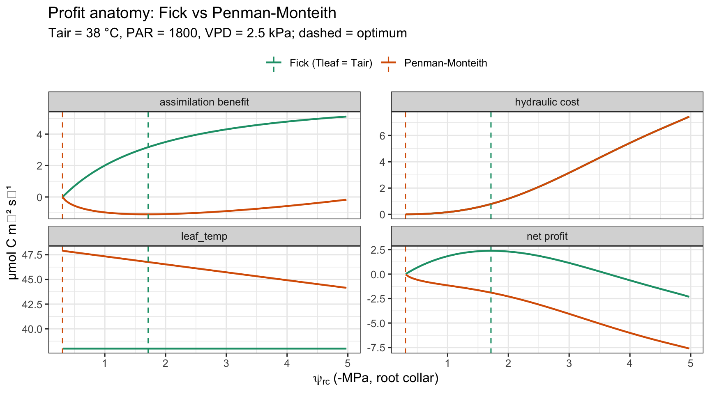

TF24: leaf energy balance, Fick vs Penman–Monteith
guide
Code
library(plant)library(ggplot2)library(patchwork)library(dplyr)library(tidyr)# Shared leaf-driving code, installed with plant and exercised by its# tests/testthat/test-pm-leaf-demo.R, so this page cannot silently rot.source(system.file("guide-helpers", "pm_demo_helpers.R", package ="plant", mustWork =TRUE))theme_set(theme_bw(base_size =12))pal <-c("Fick (Tleaf = Tair)"="#1b9e77", "Penman-Monteith"="#d95f02")lab_pm <-function(pm) ifelse(pm, "Penman-Monteith", "Fick (Tleaf = Tair)")
This document demonstrates the TF24 leaf submodel with the Penman-Monteith leaf energy balance (use_energy_balance_, issue #523) turned on vs the default off (Fick’s law, Tleaf = Tair). It drives a single well-watered leaf across an environment grid. The plan and the Step 5 evaluation are in plant’s notes/penman-monteith/.
1. Profit anatomy at a single hot environment
The leaf chooses its root-collar water potential to maximise carbon profit = assimilation benefit − hydraulic cost; find_root_collar_psi() searches over this variable directly, not ψ_stem — ψ_stem is derived from each candidate collar potential via the stem’s hydraulic transport (find_psi_stem_from_psi_root). This scan drives the leaf the same way, via evaluate_root_collar_psi(), so the dashed real-solver optimum lands on the visible curve. Under PM, the assimilation curve bends because a hotter leaf shifts the Farquhar temperature response. Here at a hot, high-radiation, high-VPD environment (Tair = 38 °C, PAR = 1800, VPD = 2.5 kPa).
Code
env1 <-list(PAR =1800, Tair =38, VPD =2.5)root_psi_seq <-seq(0.31, 5.5, length.out =120)collar_curve <-bind_rows(pm_collar_curve(env1$PAR, env1$Tair, env1$VPD, FALSE, root_psi_seq),pm_collar_curve(env1$PAR, env1$Tair, env1$VPD, TRUE, root_psi_seq)) |>mutate(model =lab_pm(pm)) |>filter(is.finite(profit))# Optima from the actual solver, on the same (positive-magnitude) root-collar# potential axis as root_psi_seq.opt <-bind_rows(pm_solve_cell(env1$PAR, env1$Tair, env1$VPD, FALSE),pm_solve_cell(env1$PAR, env1$Tair, env1$VPD, TRUE)) |># opt_root_psi is already the positive magnitude the plot's axis wants# (phylloptim #25), so there is no negation here any more.mutate(model =lab_pm(pm), root_psi = opt_root_psi)collar_curve_long <- collar_curve |>pivot_longer(c(profit, assim, hydraulic_cost, leaf_temp),names_to ="component", values_to ="value") |>mutate(component =recode(component,profit ="net profit", assim ="assimilation benefit",hydraulic_cost ="hydraulic cost"))ggplot(collar_curve_long, aes(root_psi, value, colour = model)) +geom_line(linewidth =0.8) +geom_vline(data = opt, aes(xintercept = root_psi, colour = model),linetype ="dashed") +facet_wrap(~component, scales ="free_y") +scale_colour_manual(values = pal, name =NULL) +labs(x =expression(psi[rc]~"(-MPa, root collar)"), y ="µmol C m⁻² s⁻¹",title ="Profit anatomy: Fick vs Penman-Monteith",subtitle =sprintf("Tair = %g °C, PAR = %g, VPD = %g kPa; dashed = optimum", env1$Tair, env1$PAR, env1$VPD)) +theme(legend.position ="top")

2. Optimal outcomes across environments
Sweep Tair × PAR at a fixed VPD, solving the optimum with Fick and with PM, and compare leaf temperature, the optimum stem potential, stomatal conductance, transpiration, assimilation, and profit. The coolest air is 20 °C because a VPD of 2 kPa cannot occur below about 17.5 °C, where saturation vapour pressure falls under 2 kPa, and the leaf refuses a negative relative humidity.
The correction is negligible in cool/low-light conditions and large in the hot, high-radiation corner — where the overheated leaf loses most of its carbon gain.
Code
grid2 <-expand.grid(PAR =c(200, 500, 1000, 2000),Tair =c(20, 25, 35, 40), VPD =2.0)both <-pm_solve_grid(grid2)wide <- both |>select(PAR, Tair, pm, A, Tleaf) |> tidyr::pivot_wider(names_from = pm, values_from =c(A, Tleaf),names_glue ="{.value}_{ifelse(pm, 'pm', 'fick')}") |>mutate(dTleaf = Tleaf_pm - Tair,relA =ifelse(A_fick >1, 100* (A_pm - A_fick) / A_fick, NA_real_))ggplot(wide, aes(factor(PAR), factor(Tair), fill = relA)) +geom_tile(colour ="white") +geom_text(aes(label =ifelse(is.na(relA), "·", sprintf("%.0f", relA))), size =3) +scale_fill_gradient2(low ="#b2182b", mid ="#f7f7f7", high ="#2166ac",midpoint =0, name ="ΔA %") +labs(x ="PAR (µmol m⁻² s⁻¹)", y ="Tair (°C)",title ="Relative change in assimilation, PM vs Fick",subtitle ="VPD = 2 kPa; blue = PM raises A, red = PM lowers A, · = A≈0")